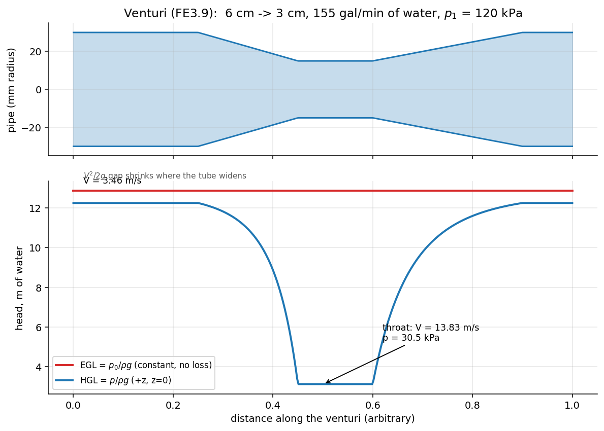
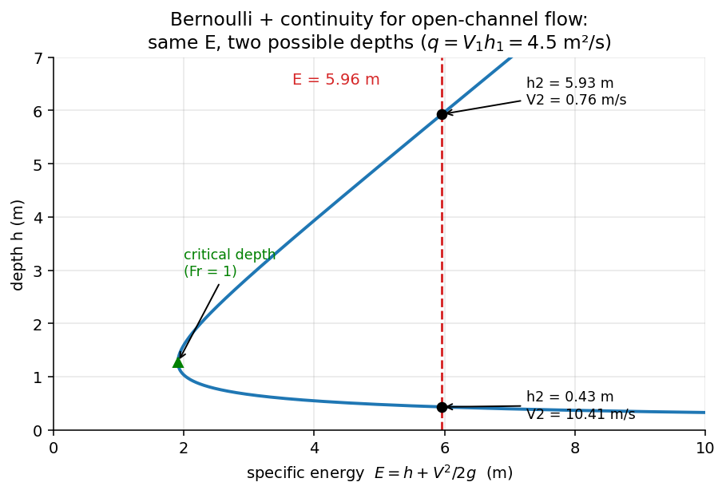

Fluid Mechanics · Incompressible Inviscid Flow · 8 min read
Incompressible Inviscid Flow and Bernoulli – Formula Bank
← up: Fluid Mechanics MOC · builds on: Differential kinematics, Linear momentum, Ideal fluid · worked problems: Solved Problems
Concept notes (explained step by step): Euler's Equations of Fluid Motion, Bernoulli Equation, Static, Stagnation and Dynamic Pressure, Pitot Tube and Pressure Measurement
Equation numbers are White's. Items marked ✓ are recomputed in Tools/fm_core.py. Items marked † are standard practice, not stated in White's text.
1. Euler's equations · 2. The Bernoulli equation · 3. Assumptions and restrictions · 4. Static, stagnation and dynamic pressure · 5. Pressure measurements: Pitot, static tap, wall tap · 6. Standard applications · 7. Procedure and traps
1. Euler's equations
Newton's second law for a frictionless fluid element (momentum equation with , 4.114):
Components: .
Vector identity (4.115): with . Dotting Euler with a displacement gives (4.116)
The third term disappears if (1) no flow, (2) (irrotational), (3) (rare), or (4) (along a streamline) – that is how Bernoulli arises.
Streamline coordinates ( along the streamline, toward the centre of curvature, radius ; P4.26):
- Along : integrates to Bernoulli (steady: const).
- Normal to : pressure increases away from the centre of curvature (centripetal force). For straight, parallel streamlines (): const across the flow – hydrostatic in the normal direction. Forced vortex check ✓: .
Cylindrical components (steady, ): , (gravity omitted).
2. The Bernoulli equation
2.1 Derivation (control volume, Sec. 3.7; or Euler along a streamline)
Streamtube of area , length ; mass: (3.74); momentum with pressure and gravity forces only gives
2.2 Forms
Unsteady, along a streamline (3.76, 4.119):
Steady, incompressible, frictionless (3.77, 4.120):
| Form | Equation | Units |
|---|---|---|
| pressure | Pa | |
| energy per unit mass | J/kg | |
| head | m |
With work and losses (steady-flow energy equation, 3.71, kinetic-energy factor ):
laminar pipe flow, – turbulent (3.72, 3.73); usually for turbulent flow. Bernoulli is the special case , .
Irrotational flow (): the constant is the same everywhere, not just along one streamline (4.120). For rotational flow each streamline has its own constant .
Unsteady irrotational (with , 4.123, 4.124):
Compressible, isentropic ideal gas (P3.182, ):
Unsteady example (P3.180, P3.181): large tank (depth constant), pipe of length opened at : ⇒ ✓ (closed tank at gage pressure : replace by ).
2.3 Energy grade line and hydraulic grade line
- HGL = height liquid rises in a piezometer tube; EGL = height of a Pitot tube.
- EGL falls with friction or turbines, rises only with a pump; HGL rises where velocity falls.
- Open channel: HGL = free surface.

Figure: FE3.9: EGL stays constant (frictionless); the HGL dips by in the throat, where pressure is lowest (30.5 kPa).3. Assumptions and restrictions
- Steady flow
- Incompressible ()
- Frictionless (inviscid) – excludes boundary layers, wakes, separated regions
- Along a single streamline (or throughout, if irrotational)
- No shaft work (no pump/turbine between the points)
- No heat transfer (the work and heat items are tied to friction in real fluids)
| Region | Valid? |
|---|---|
| core flow of a wind tunnel, outside the boundary layers | yes |
| boundary layers, wakes, near solid walls | no |
| across a propeller or pump, or heated chimney | constant changes (valid on each side) |
| within a free jet leaving a nozzle | yes (p = ambient) |
Other checks: points 1 (upstream) and 2 (downstream) should be where the most is known; Bernoulli almost always needs continuity as a partner; no conversion factors are needed in consistent SI/BG units.
4. Static, stagnation and dynamic pressure
| Pressure | Definition | Measured by |
|---|---|---|
| static | thermodynamic pressure in the fluid, felt by an observer moving with it | wall tap, static port, piezometer |
| dynamic | difference between stagnation and static | |
| stagnation | pressure when the flow is brought isentropically to rest | Pitot (total-head) tube |
| total (hydraulic) | with elevation included |
Pressure coefficient: ; at a stagnation point ✓.
Compressible stagnation pressure (ideal gas, isentropic, Ch. 9): , so
 Figure: Why the incompressible Pitot formula over-reads dynamic pressure at higher speed.
Figure: Why the incompressible Pitot formula over-reads dynamic pressure at higher speed.
5. Pressure measurements: Pitot, static tap, wall tap

| Device | Reads | Notes |
|---|---|---|
| Piezometer tube (open vertical tube on a wall) | (HGL) | liquids only, |
| Wall tap / static tap (small hole normal to the wall, flush, burr-free) † | static pressure | valid where streamlines are straight and parallel, ; errors from burrs, large holes, rough edges, curvature, separation |
| Pitot tube (total-head tube pointing into the flow) | stagnation pressure; yaw sensitivity | |
| Pitot-static (Prandtl) tube | static ports on the side (4–8 holes, about 8 diameters behind the nose) |
Pitot formula (6.117), (frictionless), elevation difference negligible:
With a differential manometer (fluid , height , flowing fluid ):
Gas flow with a liquid manometer (): ; liquid flow with mercury (): ✓.
Practical limits (White): align with the flow (errors grow beyond about 5° yaw: both the stagnation and static readings go wrong, reaching about ±10 % at 20°, Fig. 6.30); useless in unsteady flow because the tube lag is slow; for gases at high use the compressible correction (Sec. 4); probe diameter small compared with the flow scale so it is nearly a point measurement.
Airspeed example ✓: air kg/m³, Pa ⇒ m/s (, compressibility error ).
Static-tap checklist †: place on a straight wall away from bends and fittings; hole normal and flush; diameter ≲ 1/10 of the wall-layer thickness, ≈ 1 mm typical; deburr; several taps around a duct (a ring or piezometer ring) to average out asymmetry; connect with liquid-filled lines free of bubbles.
6. Standard applications
Torricelli (tank outflow) (Ex. 3.21): free surface above a nozzle, both at :
Independent of .
Draining time (P3.179): empty, tank diameter , hole :
Venturi meter / nozzle (Ex. 3.23, P3.165): horizontal, , :
Actual .
Orifice / pipe contraction + momentum (Ex. 3.24 fire hose): Bernoulli gives ; control-volume momentum gives the flange force ✓ ( N for 10 cm → 3 cm, 1.5 m³/min).
Hose / nozzle jet range (P3.159): Bernoulli + continuity, : ; a frictionless jet leaving at angle travels (maximum at 45°, so ) ✓ (P3.159: ft needs psig).
Cavitation limit (P3.170–3.172): lowest absolute pressure in the flow must exceed the vapour pressure. At a throat: ⇒ to avoid it.
Siphon (P3.169): free surface at , summit a height above it, outlet a depth below it, constant tube area. Bernoulli surface → outlet: (depends only on ). Surface → summit: – the lowest pressure in the system; it cannot go below , so m for water.
Open-channel step/bump (P3.175–3.178): Bernoulli on the free surface with :
a cubic with two positive roots – sub-critical (deep, slow) and super-critical (shallow, fast), meeting at the critical depth , .

Figure: Specific-energy curve: for one energy the free surface can take two depths (the physical one depends on the downstream condition).Drain vortex / free vortex (P4.60): irrotational, so Bernoulli holds across streamlines: const with .
Forced vortex (rotating container): rotational; ; free surface .
7. Procedure and traps
flowchart TD
A["Problem"] --> B["Draw streamline; pick points 1 (upstream), 2 (downstream)\nwhere p, V, z are known or wanted"]
B --> C{"6 conditions OK?\nsteady, incompressible, frictionless,\nsame streamline, no work, no heat"}
C -- "pump/turbine/loss" --> D["Use energy equation (3.71)\nwith h_p, h_t, h_f"]
C -- "unsteady" --> E["Keep ∫ ∂V/∂t ds (3.76)"]
C -- yes --> F["p1/ρ + V1²/2 + g z1 = p2/ρ + V2²/2 + g z2"]
F --> G["Add continuity A1V1 = A2V2"]
G --> H["Add momentum for forces if needed"]
H --> I["Check: p ≥ p_vapour, Ma < 0.3, units, sign of head terms"]
- Applying Bernoulli across a pump, turbine, or through a boundary layer.
- Using gage pressure in a compressible/cavitation check (use absolute).
- Forgetting continuity (two unknowns ).
- Applying it between different streamlines in rotational flow.
- Treating (stagnation) as the pressure the fluid is at; it is the pressure it would reach at rest.
- Using the Pitot formula with a manometer without subtracting of the flowing fluid (liquid-in-liquid).
- Ignoring that a static tap reads the true static pressure only in nearly straight flow.
- Taking the tank-draining as zero when is not tiny.
- Using Bernoulli to compute friction losses: it contains none.
Prerequisites and next
- Prerequisites: Pressure and the hydrostatic equation, Continuity
- Next: viscous flow in ducts (head loss), potential flow (Ch. 8)
Cross-domain links
- Bernoulli's three terms are the mechanical-energy balance of an ideal fluid – same structure as energy methods in Strength of Materials (strain energy + work) and the electrical energy balance of EE1100 circuits (capacitor/inductor energy exchange without loss).
Cross-domain links
- Conservation Laws and Flow Networks — Bernoulli as KVL for an ideal pipe; ½ρV² is inductor energy with inertance ρℓ/A.